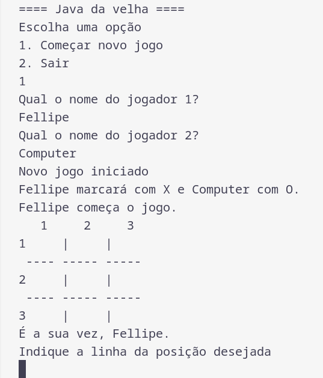

Jogo da Velha com interface textual feito em Java
O jogo é estruturado com princípios de orientação a objetos e permite que duas pessoas joguem, indicando as posições que desejam marcar.
Calculadora básica em HTML e JavaScript
Colocar descriçãoA calculadora possui as quatro operações matemáticas básicas e tem o campo de resultado dinamicamente atualizado.
Aplicativo bancário com interface textual feito em Java
Um aplicativo semelhante a um banco digital usa orientação a objetos estruturas de dados da linguagem Java